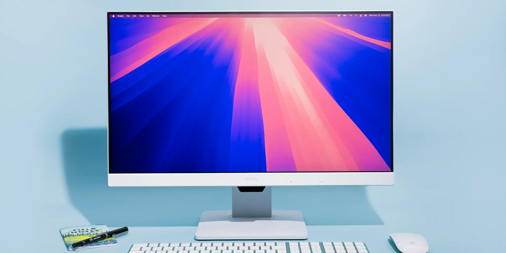

Point of Sale (POS) Systems: POS systems was invented in 1879 with James Ritty's mechanical cash register, known as "Ritty's Incorruptible Cashier". This early device had a goal to help prevent employee theft and improve transaction accuracy. This is a crucial tool for businesses to handle transactions, manage inventory, and track sales. It's a combination of hardware like cash registers, card readers, and barcode scanners
Printers: This machine is the "great-great grandchildren" of the printing press, so printing paper with text has evolved with faster and better quality printing. The object that makes the words colored are the ink pigments, which has mutiple colors like Cyan, Magenta, Yellow, and Black. They are the "full color printing" squad.

The Internet: A electronic communication network that connects computer networks and organizational computer facilities around the world. This was known as the World Wide Web (WWW) created in the 1960's. It increased collaboration with team members and business devices. This changed the world forever.